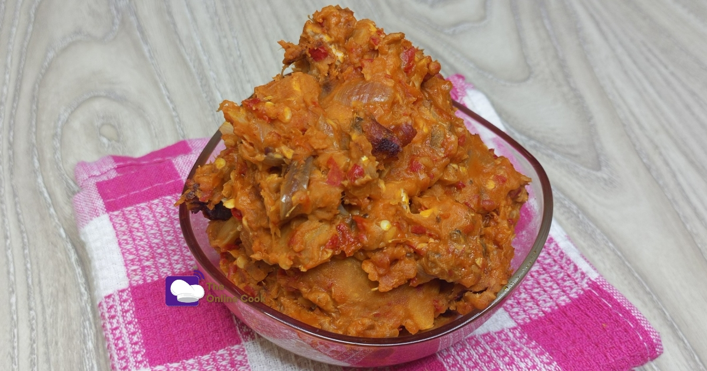

Coco-yam
To avoid confusion, Cocoyam is the same as taro root.
In many Asian countries,it is called Taro while
in many African countries such as Nigeria,
it is referred to as cocoyam.But, if you intend
to go shopping in a typical Nigerian market,
it is necessary that you know the types of
cocoyam in Nigeria.
Ingredients for cocoyam porridge
- 3 red cocoyam tubers
- 1/8 cup palm oil
- 1 small onions
- 2 tomatoes
- 2 scotch bonnet (ata rodo)
- 1 Panla fish (smoked hake fish)
- ½ teaspoon salts
- 1 teaspoon seasoning
- Water
How to prepare cocoyam porridge
- Peel cocoyam tubers with a knife or potato peeler.
- Dispose the cocoyam peels.
- Get a bowl of clean water and rinse the peeled cocoyam.
- Cut the cleaned cocoyam into small sizes and set aside.
- Remove the fish head and the bones in the roasted fish and set the deboned fish aside.
- Slice/chop the onions and set aside.
- Also blend the tomatoes and scotch bonnet to a rough texture and set aside.
- Set your cooker to medium heat and place your pot on it.
- Add palm oil and let it heat up briefly.
- Add the deboned roasted fish
- Mix and fry for 1-2minutes – It is better to cover your pot at this point,
this is to avoid kitchen incidents such as the slashing of hot oil or fried fish
- Add onions, blended tomatoes and pepper, salt and seasoning powder.
- After 3 minutes, add 1 cup of water to the sauce.
- Mix well and add cocoyam
- Cover the pot and cook till the cocoyam is very soft
- Mash cooked cocoyam to your preference with a spatula or potato masher
- Red cocoyam porridge is ready to be served.
Back to Home